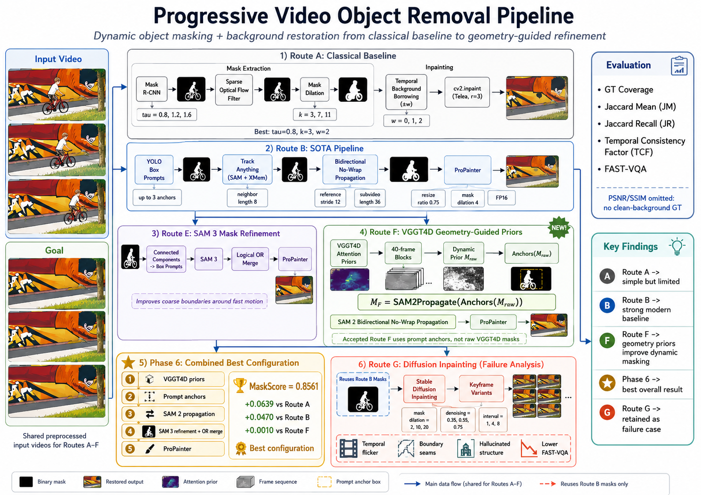

Dynamic Object Removal and Background Restoration in Videos
A progressive video object removal system, moving from a classical Mask R-CNN baseline to Track Anything + ProPainter and geometry-guided mask refinement.
HKUST (Guangzhou) | AIAA 3201 Spring 2026
Abstract
We study automatic dynamic object removal and background restoration on the
mandatory videos wild, bmx-trees, and tennis. The
system starts from a classical baseline combining Mask R-CNN instance masks,
sparse optical-flow filtering, temporal borrowing, and cv2.inpaint.
It then advances to a Track Anything + ProPainter pipeline and evaluates two
mask-side improvements: SAM 3 refinement and VGGT4D geometry priors.
The corrected final route is important: Route F does not use Track Anything fusion as the final mask. VGGT4D outputs are converted into prompt anchors and propagated with SAM 2, the alternate backend to the Route B Track Anything baseline. Phase 6 applies SAM 3 refinement on top of this F-best prior and reaches 0.8561 MaskScore on the two datasets with ground-truth masks. This is an absolute +0.0639 over Route A and +0.0470 over Route B; the gain over Route F alone is only +0.0010.
Pipeline Overview

Routes A-F use the same preprocessed input videos. Route G reuses Route B masks and changes only the inpainting module, so it is treated as a diffusion failure analysis rather than as a ranked main method.
Corrected Method Summary
| Route | Accepted configuration | Role in the final analysis |
|---|---|---|
| A-best | Mask R-CNN + sparse optical-flow dynamic filtering + dilation 3 + Telea inpainting + temporal borrowing with window 2. | Classical baseline and lower-bound reference. |
| B-best | Track Anything coarse masks, bidirectional no-wrap propagation, and ProPainter with neighbor 8, ref stride 12, subvideo 36, resize 0.75, mask dilation 4. | Main SOTA reproduction. It improves JM/JR and FAST-VQA over A, although GT coverage is nearly unchanged. |
| B+E | SAM 3 multi-anchor refinement on Route B masks, merged by logical OR before ProPainter. | Raises coverage and FAST-VQA, but slightly lowers JM, so the gain is a coverage-precision trade-off rather than a uniform boundary improvement. |
| B+F | VGGT4D prior masks are converted into prompt anchors and propagated by SAM 2, because SAM 2 is the alternate backend to Route B's Track Anything. | Largest accepted single gain over B. Raw VGGT4D replacement is a negative control with only 0.6087 MaskScore. |
| Phase6-best | Route F mask followed by SAM 3 boundary refinement, then ProPainter inpainting. | Final Best aggregate MaskScore, but only marginally above Route F. |
| Route G | Fixed Route B masks with Stable Diffusion inpainting variants and hybrid local redraw. | Failure case Lower TCF does not translate into better video quality; flicker, seams, and hallucinated structure remain. |
Evaluation Protocol
Datasets. All three mandatory videos are processed: wild, bmx-trees, and tennis. Aggregate mask metrics are computed only on bmx-trees and tennis, because wild has no ground-truth mask.
Selection metric. We rank mask-side methods by
MaskScore = 0.5*GT_Coverage + 0.25*JM + 0.25*JR. TCF and
FAST-VQA are reported as video-quality side metrics.
Temporal metric caveat. Lower TCF means smoother frame-to-frame color changes inside the evaluated region, but blurred or wrong stable fills can also reduce TCF. It is not used as the best-method selector.
No PSNR/SSIM. The mandatory videos do not provide clean background ground truth, so PSNR and SSIM are omitted rather than estimated from unsuitable references.
Main Quantitative Results
| Method | GT-Cov | JM | JR | MaskScore | Delta MS vs B | TCF | FAST-VQA |
|---|---|---|---|---|---|---|---|
| A-best | 0.9222 | 0.6059 | 0.7188 | 0.7923 | -0.0168 | 0.0608 | 0.0835 |
| B-best | 0.9208 | 0.6387 | 0.7562 | 0.8091 | 0.0000 | 0.0640 | 0.1060 |
| B+E | 0.9531 | 0.6328 | 0.7625 | 0.8254 | +0.0163 | 0.0647 | 0.1258 |
| B+F | 0.9722 | 0.7074 | 0.7688 | 0.8552 | +0.0460 | 0.0698 | 0.1201 |
| Phase6-best | 0.9741 | 0.7075 | 0.7688 | 0.8561 | +0.0470 | 0.0697 | 0.1234 |
Aggregate mask metrics are computed on bmx-trees and tennis. The final selection follows MaskScore, not TCF. B+E has the highest FAST-VQA in this table, while Phase6-best has the best mask metrics.
Key Experimental Findings
A to B. Track Anything + ProPainter gives a real but modest MaskScore gain over the classical baseline (+0.0168), driven by better JM and JR rather than by covering more pixels.
Route E. SAM 3 refinement improves GT coverage and yields the highest FAST-VQA, but it slightly lowers JM. The improvement is therefore not a simple across-the-board boundary improvement.
Route F. VGGT4D is useful as a prompt prior, not as a raw final mask. The accepted SAM 2 propagation route gives the largest single gain over B (+0.0460 MaskScore).
Phase 6. Adding SAM 3 after Route F barely changes the mask metrics (+0.0010 over F), showing diminishing returns after the VGGT4D-derived SAM 2 masks are already in place.
Per-Dataset Analysis
| Dataset | GT-Cov | JM | JR | Phase 6 MaskScore | Interpretation |
|---|---|---|---|---|---|
| bmx-trees | 0.9548 | 0.4938 | 0.5375 | 0.7352 | Still difficult because fast cyclist motion and foliage occlusion fragment the mask. |
| tennis | 0.9935 | 0.9212 | 1.0000 | 0.9770 | Much more tractable once prompts are stable; Route B was already strong and Phase 6 improves coverage and JM. |
The Phase 6 gap between tennis and bmx-trees is 0.2418 MaskScore, larger than the aggregate gain from stacking SAM 3 after Route F. Residual error is therefore dominated by dataset difficulty.
Video Results
Each panel shows restored video outputs for the mandatory datasets. The comparison uses A-best, B-best, and the final Phase6-best configuration.
bmx-trees
tennis
wild
Failure Analysis: Route G
Route G fixes the Route B Track Anything masks and changes only the renderer to Stable Diffusion inpainting variants. Because the masks are fixed, the mask metrics remain identical to B-best by construction. G-hybrid has the lowest TCF among the tested diffusion variants (0.0490), but its selected-output FAST-VQA is below B-best (0.0991 vs. 0.1060; the variant table score is 0.1011), and visual inspection shows temporal flicker, boundary seams, and hallucinated structure.
| Variant | Dilation | Denoise | Keyframe | TCF | FAST-VQA | Role |
|---|---|---|---|---|---|---|
| G-low | 2 | 0.35 | 1 | 0.0642 | 0.0830 | Failure analysis only |
| G-mid | 10 | 0.55 | 4 | 0.0507 | 0.0930 | Failure analysis only |
| G-high | 20 | 0.75 | 1 | 0.0722 | 0.0791 | Failure analysis only |
| G-hybrid | 10 | 0.55 | 8 | 0.0490 | 0.1011 | Best diffusion variant, still not ranked as a main method |
| B-best reference | - | - | - | 0.0640 | 0.1060 | Main ProPainter reference under Route B masks |
The diffusion result is not a replacement for ProPainter in the final system. Keyframe propagation lowers measured TCF by sampling fewer frames, but it cannot enforce temporally consistent generated content.
G-hybrid restored outputs
Reproducibility
The numbers above are from the accepted experiment outputs under
outputs/metrics/. The final table artifacts are generated by:
bash scripts/build_results_artifacts.sh
Accepted experiment IDs: phase1_maskscore_fastvqa_20260510_023457_pl220,
phase2_maskscore_fastvqa_20260510_023457_pl220,
phase3_maskscore_fastvqa_20260510_023457_pl220,
phase4_maskscore_fastvqa_altbackend_20260510_pl220, and
phase6_core_maskscore_fastvqa_20260511_235610_pl220.
Citation
@article{mo2026videoremoval,
title = {Dynamic Object Removal and Background Restoration in Videos},
author = {Mo, Zijun and Qiao, Xiaolong},
journal = {AIAA 3201 Course Project},
year = {2026}
}